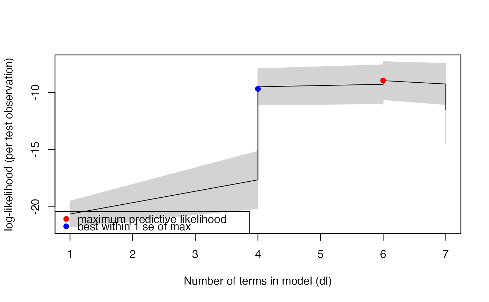

cv.glm1path.RdFits a sequence (path) of generalised linear models with LASSO penalties, using an iteratively reweighted local linearisation approach. The whole path of models is returned, as well as the one that minimises predictive log-likelihood on random test observations. Can handle negative binomial family, even with overdispersion parameter unknown, as well as other GLM families.
cv.glm1path(object, block = NULL, best="min", plot=TRUE, prop.test=0.2, n.split = 10,
seed=NULL, show.progress=FALSE, ...)Output from a glm1path fit.
A factor specifying a blocking variable, where training/test splits randomly assign blocks of observations to different groups rather than breaking up observations within blocks. Default (NULL) will randomly split rows into test and training groups.
How should the best-fitting model be determined? "1se" uses the one standard error rule, "min" (or any other value) will return the model with best predictive performance. WARNING: David needs to check se calculatios...
Logical value indicating whether to plot the predictive log-likelihood as a function of model complexity.
The proportion of observations (or blocks) to assign as test observations. Default value of 0.2 gives a 80:20 training:test split.
The number of random training/test splits to use. Default is 10 but the more the merrier (and the slower).
A vector of seeds to use for the random test/training splits. This is useful if you want to be able to exactly replicate analyses, without Monte Carlo variation in the splits. Default will not used fixed seeds.
Logical argument, if TRUE, console will report when a run for a seed has been completed. This option has been included because this function can take yonks to run on large datasets.
Further arguments passed through to glm1path.
This function fits a series of LASSO-penalised generalised linear models, with different values for the LASSO penalty, as for glm1path. The main difference is that the best fitting model is selected by cross-validation, using n.test different random training/test splits to estimate predictive performance on new (test) data. Mean predictive log-likelihood (per test observation) is used as the criterion for choosing the best model, which has connections with the Kullback-Leibler distance. The best argument controls whether to select the model that maximises predictive log-likelihood, or the smallest model within 1se of the maximum (the '1 standard error rule').
All other details of this function are as for glm1path.
Vector of model coefficients for the best-fitting model (as judged by predictive log-likelihood)
The value of the LASOS penalty parameter, lambda, for the best-fitting model (as judged by predictive log-likelihood)
The glm1 fit for the best-fitting model (as judged by predictive log-likelihood). For what this contains see glm1.
A matrix where each column represents the model coefficients for a fit along the path specified by lambdas.
A vector specifying the path of values for the LASSO penalty, arranged from largest (strongest penalty, smallest fitted model) to smallest (giving the largest fitted model).
A vector of log-likelihood values for each model along the path.
A vector giving the number of non-zero parameter estimates (a crude measure of degrees of freedom) for each model along the path.
A vector of BIC values for each model along the path. Calculated using a penalty on model complexity as specified by input argument k.
A vector counting how many iterations until convergence, for each model along the path.
A vector of logical values specifying whether or not Karush-Kuhn-Tucker conditions are satisfied at the solution.
For negative binomial regression - a vector of overdispersion parameters, for each model along the path.
The vector of values for the response variable specified as an input argument.
The design matrix of p explanatory variables specified as an input argument.
The vector to be multiplied by each lambda to make the penalty for each fitted model.
The family argument specified as input.
The mean predictive log-likelihood, averaged over all observations and then over all training/test splits.
Estimated standard error of the mean predictive log-likelihood.
Osborne, M.R., Presnell, B. and Turlach, B.A. (2000) On the LASSO and its dual. Journal of Computational and Graphical Statistics, 9, 319-337.
data(spider)
Alopacce <- spider$abund[,1]
X <- model.matrix(~.,data=spider$x) # to get design matrix with intercept term
# fit a LASSO-penalised negative binomial regression:
ft = glm1path(Alopacce,X,lam.min=0.1)
coef(ft)
#> (Intercept) soil.dry bare.sand fallen.leaves moss
#> -1.9332758 -0.6282024 0.0000000 -0.2420786 0.1581210
#> herb.layer reflection
#> 0.6024593 0.7663732
# now estimate the best-fitting model by cross-validation:
cvft = cv.glm1path(ft)

coef(cvft)
#> (Intercept) soil.dry bare.sand fallen.leaves moss
#> -1.88479622 -0.79000588 -0.04183393 -0.26295595 0.13478827
#> herb.layer reflection
#> 0.67326991 0.81054027